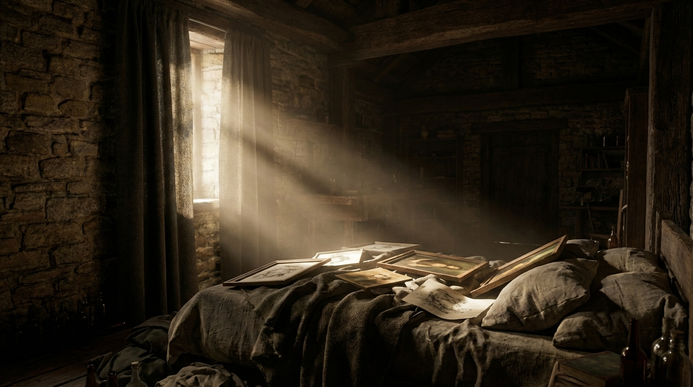
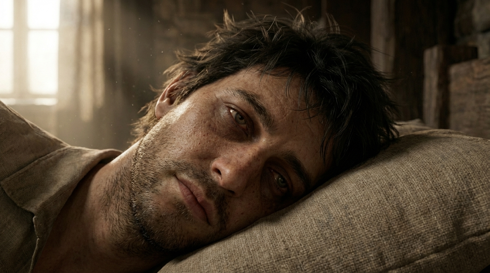
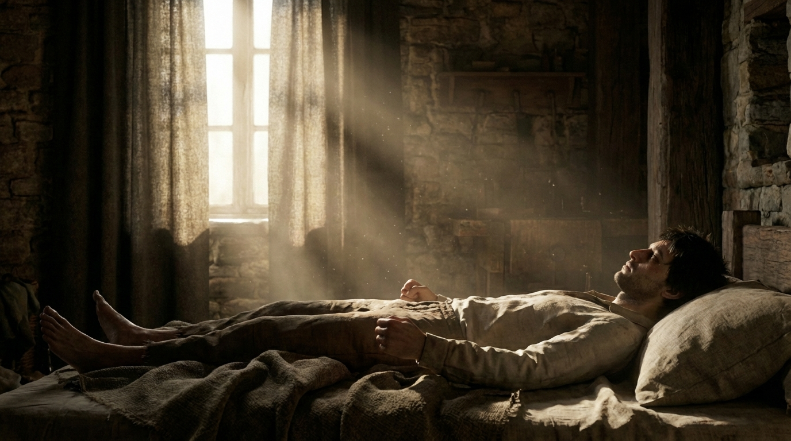
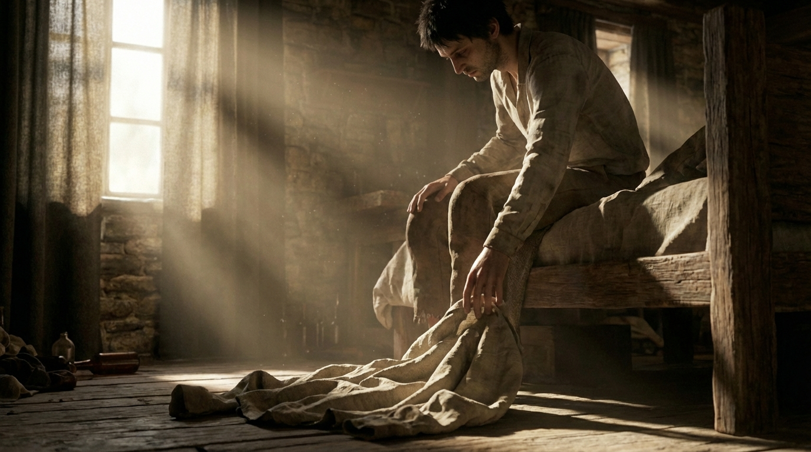

ID: 1 | Wide Shot (WS) | Dolly (Push In/Out)
🎨 NANO (Static Pre-Action):
Here is the physics-based motion prompt optimized for Veo 3.1:
**Cinematic slow dolly push.** The camera physically advances along the Z-axis toward the bed, creating a heavy, creeping parallax effect where the stone window frame on the left slides outward while the back wall expands. Within the sharp volumetric light shafts, turbulent dust motes drift lazily, highlighting the air's stagnation. The framed paintings and rumpled grey linens on the bed remain rigorously static and anchored, providing a motionless focal point against the floating atmosphere and the approaching camera.
🎥 VEO (Motion Trigger):
The camera slowly dollies into the room. Dust motes drift lazily through a sharp beam of sunlight. The figure on the bed remains perfectly motionless, creating a sense of heavy stagnation.

ID: 2 | Close Up (CU) | Static
🎨 NANO (Static Pre-Action):
Here is the physics-based motion prompt optimized for Veo 3.1.
**PROMPT:**
> **Cinematic static shot. The subject's irises slowly and deliberately glide from a neutral gaze toward the upper-right corner of the eye sockets. A heavy, visible exhale releases from the mouth, causing the chest and shoulder to depress slightly. The force of this breath physically disrupts the damp bangs resting on the forehead; the hair strands lift upward, flutter momentarily in the airstream, and then settle back down against the skin under the weight of gravity. Dust particles in the light swirl with the movement.**
🎥 VEO (Motion Trigger):
The character's eyeballs slowly rotate toward the wooden door in the background. A heavy, deep exhale follows, causing the strands of his bangs to lift and flutter momentarily before settling back.

ID: 3 | Medium Shot (MS) | Tilt
🎨 NANO (Static Pre-Action):
Here is the physics-based motion prompt, optimized for Veo 3.1’s interpretation of weight and displacement.
**PROMPT:**
> **Camera Movement:** A slow, synchronized vertical tilt up, tracking the subject's head as it rises, maintaining a medium shot composition.
>
> **Action Sequence:** The subject executes a labored transition from a supine to a seated position. The motion initiates with a heavy chin-tuck; the head peels off the pillow first, dragging the torso upward. The elbows dig downward into the mattress, acting as fulcrums to leverage the upper body weight against gravity. The torso hinges at the hips with agonizing slowness, rising to a vertical axis before the shoulders immediately roll forward into a slumped, defeated hunch.
>
> **Physics & Interaction:** As the weight shifts from the back to the pelvis, the linen sheets and mattress visibly compress and wrinkle beneath the hips and driving elbows, grounding the movement in reality.
🎥 VEO (Motion Trigger):
The character sits up with agonizingly slow speed. The wooden bed frame creaks under the shifting weight. Gravity pulls at his shoulders as he hunches over, staring at the floor.

ID: 4 | Medium Close Up (MCU) | Handheld
🎨 NANO (Static Pre-Action):
Here is the precise motion prompt optimized for Veo 3.1 Fast.
**PROMPT:**
> Cinematic motion. From the frozen seated posture, Art's right hand abruptly tightens around the fabric and jerks it vertically upward. The heavy cloth snaps taut, dragging off the floorboards and disturbing dust motes in the volumetric light. He pulls the crumpled bundle directly to his face, momentarily compressing the textured fabric against his nose and mouth. In a continuous, fluid motion, he lifts the garment high, expanding the neck hole with both hands, and drags the fabric down over his head. The material stretches tightly across his facial features, creating realistic cloth tension and occlusion, before his face emerges from the neck opening. Handheld camera instinctively tilts upward to track the fabric's rapid ascent and interaction with the light.
**RATIONALE (Physics & Motion Delta):**
* **The "Snatch":** Using words like "abruptly," "jerks," and "snaps taut" triggers Veo’s physics engine to understand weight and velocity, preventing the "floating fabric" hallucination common in AI video.
* **The "Smell":** Defined as "compressing... against nose and mouth" ensures the model understands the contact point between the soft body (shirt) and the rigid body (face).
* **The "Donning":** Describing the "stretch" and "occlusion" is critical for the AI to render the shirt going *over* the head, rather than clipping through it.
* **Camera:** "Instinctive tilt" binds the camera movement to the subject's action, maintaining the handheld, documentary feel.
🎥 VEO (Motion Trigger):
Art reaches down and snatches a crumpled shirt from the floor. He brings it to his nose, the fabric folding and compressing. He then pulls the shirt over his head, the fabric stretching and catching on his features as he emerges through the neck hole.